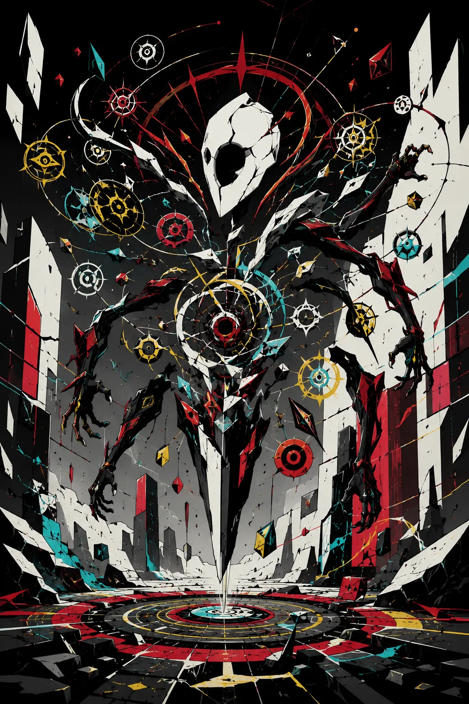

Stable Compendium record
manifest-discord
Peripheral dossier / Drakken/systemic entity
Manifest.discord
Hypercritical meme swarm
- Stable ID
manifest-discord- Structural type
- character-section
- Canon status
- unknown
- Spoiler level
- major
Published source content
Canonical record
- A hypercritical meme swarm centered on a floating hollow porcelain mask.
- Exists as distributed critical pressure rather than a conventional single-bodied combatant.
- Its presentation should preserve the mask-centered swarm identity rather than reduce it to an ordinary humanoid antagonist.
Visual reference
